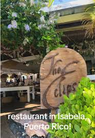
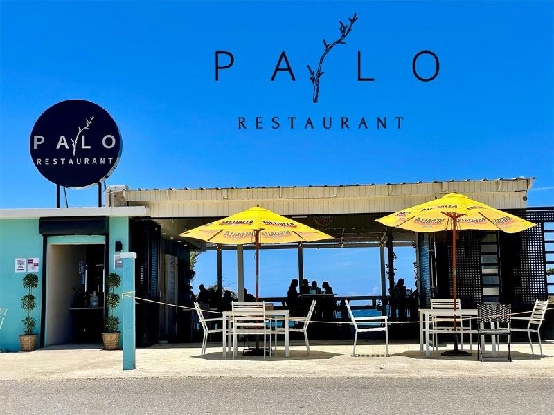
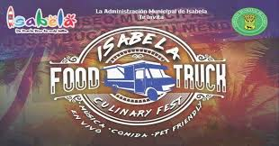

Mariscos frescos
Por su cercanía al mar, Isabela ofrece opciones de pescados y mariscos en distintos restaurantes del área.
El Jardín del Noroeste
Playas, historia, cultura y naturaleza en la costa noroeste.
La gastronomía de Isabela combina la comida típica puertorriqueña con sabores costeros. En el pueblo se pueden encontrar restaurantes, chinchorros, food trucks y negocios locales que ofrecen platos variados para residentes y visitantes.

Por su cercanía al mar, Isabela ofrece opciones de pescados y mariscos en distintos restaurantes del área.

Platos como mofongo, arroz con habichuelas, carnes, frituras y acompañantes típicos forman parte de la experiencia.

Los chinchorros y food trucks permiten disfrutar comida en un ambiente casual y cercano a la cultura del pueblo.